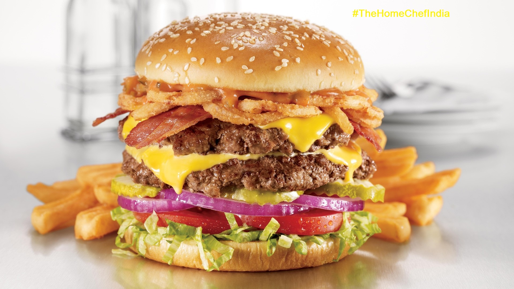

Burger

Description
Don't be fooled by the simplcity of this recipe. This well-regarded classic shines with its taste for such a simple recipe
A good option when you have little time on your hands but still want something delicious to eat
Ingredients
- 1 large egg
- ½ teaspoon salt
- ½ teaspoon ground black pepper
- 1 pound ground beef
- ½ cup fine dry bread crumbs
Steps
- Preheat an outdoor grill for high heat and lightly oil grate
- Whisk egg, salt, and pepper together in a medium bowl
- Add ground beef and bread crumbs, mixing them with your hands or a fork until they're well blended
- Form the mix into four 3/4-inch thick patties
-
Place patties on the preheated grill. Cover and cook 6 to 8 minutes per side, or to desired doneness.
An instant-read thermometer inserted into the center should show at 70 degrees Celsius
- Serve the burger and enjoy the taste
Home